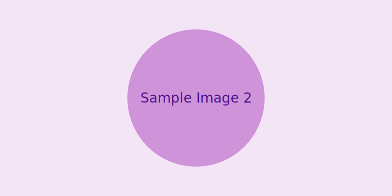

.pdf
.pdf
Images & Icons
Use these roles to present small screenshots and icons cleanly inside paragraphs when documenting menus, buttons, and UI flows.
They complement AsciiDoc’s built‑in ], menu:[, and kbd:[] macros.
1. Inline Icons
-
Role:
icon— inline SVG/PNG aligned with text. -
Sizes:
icon-sm,icon(default),icon-lg,icon-xl.
Example (inline in a sentence):
See the  icon next to the Save button.
icon next to the Save button.
Sizes: .
AsciiDoc:
See the image:sample-3.svg[role=icon,alt="icon"] icon next to the btn:[Save] button.
Sizes: image:sample-3.svg[role="icon-sm"] image:sample-3.svg[role="icon"] image:sample-3.svg[role="icon-lg"] image:sample-3.svg[role="icon-xl"].2. Inline Screenshot (Framed)
-
Role:
img-inline+img-frame— small screenshot with a subtle frame.
Example:  .
.
image:sample-1.svg[role="img-inline img-frame",alt="small framed screenshot"]3. Pill/Badge Screenshot
-
Role:
img-inline+img-chip(alias:img-badge) — pill‑shaped frame around a tiny snapshot.
Example: .
image:sample-2.svg[role="img-inline img-chip",alt="pill screenshot"]
4. Documenting Menus & Buttons
Prefer the built‑in AsciiDoc UI macros for text labels, then augment with icons or small screenshots when useful.
-
Button:
Save -
Menu path:
-
Keys:
Ctrl+S,Cmd+,
Combine with an icon like this:
Click btn:[Save] image:sample-3.svg[role=icon,alt="icon"] or choose menu:File[Save].and you get:
Click Save or choose .
5. Utility Recap
-
img-fluid— responsive image (already in this UI) -
img-shadow— soft drop shadow -
img-rounded— rounded corners -
img-inline— scale an image to text height (inline) -
icon[-sm|-lg|-xl]— inline icon sizes -
img-frame— subtle framed look -
img-chip(img-badge) — pill frame for tiny UI bits
See also: Layout Helpers (Grid) for arranging images in two or more columns.